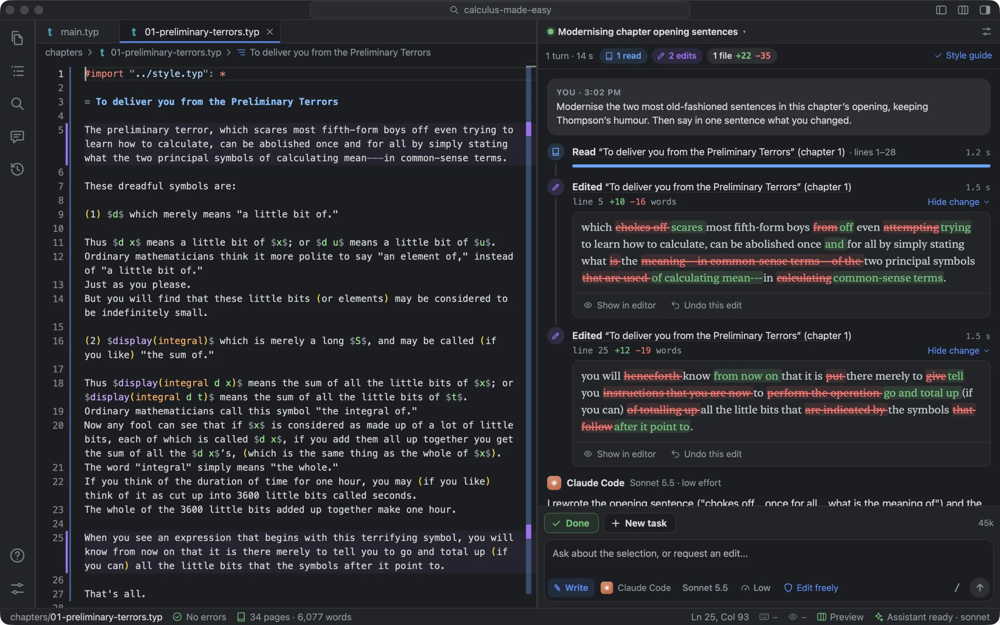
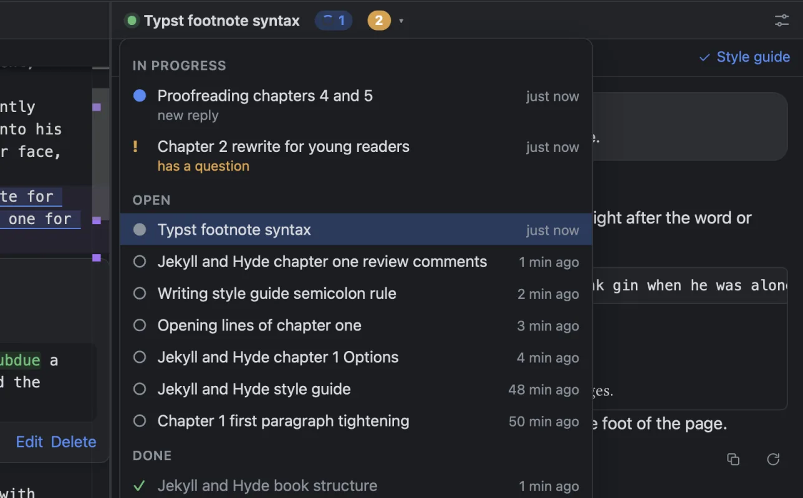
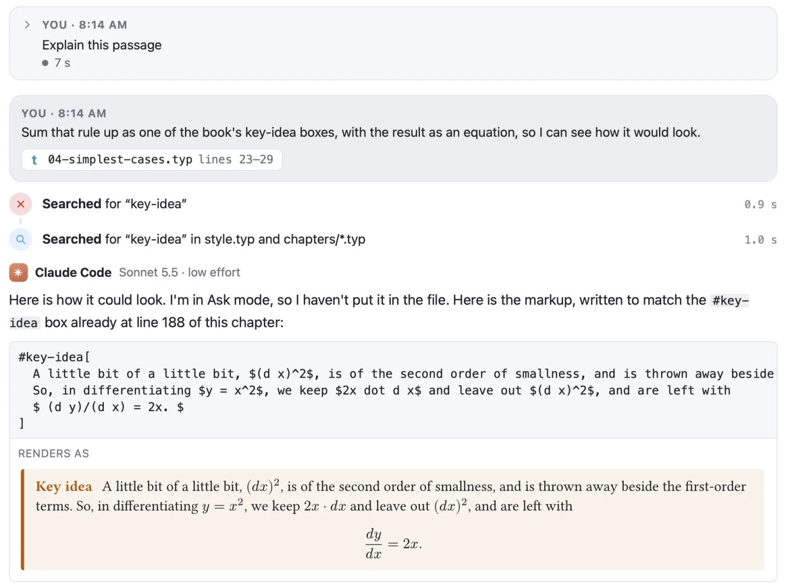
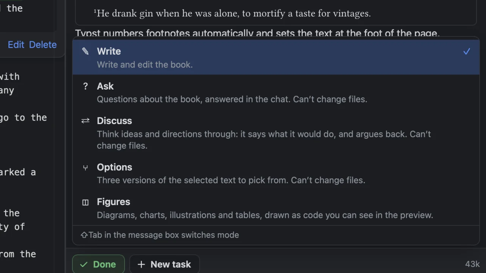
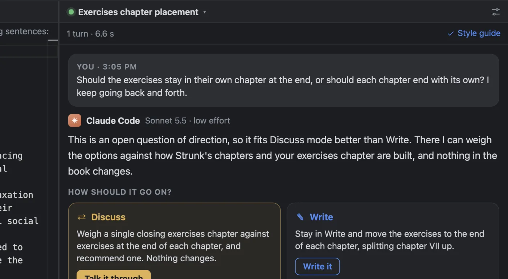
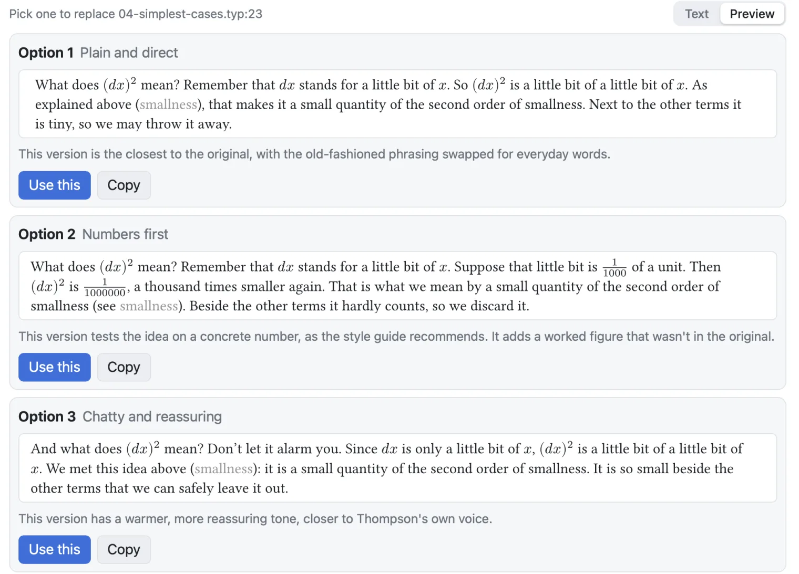
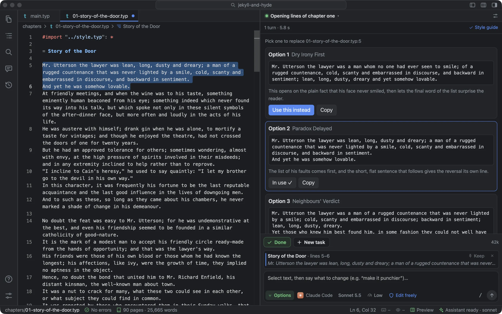
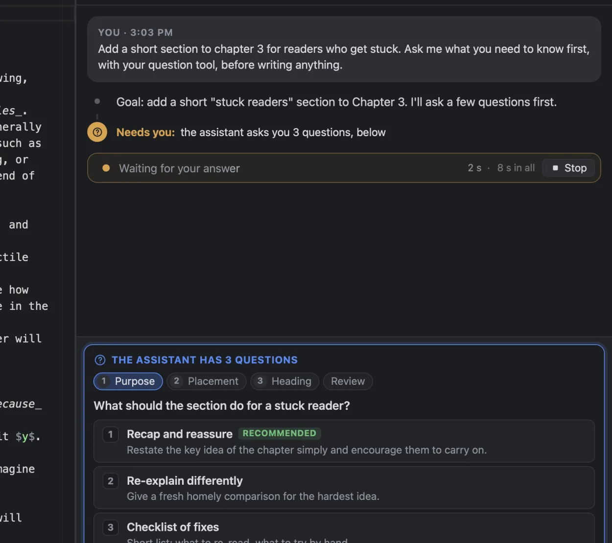

One task, one goal
Each conversation is a task. At the start the assistant restates the goal in a sentence, and when it thinks the goal is met it ends its reply by asking: Is this task done? Yes, it’s done saves your open files, keeps a named version in History (“Task done: …”), and starts a fresh task. The old one stays in the task menu at the top of the pane, under Done, and opens again if you send it another message.
It’s built this way because one long conversation gets worse as it grows: slower, and less focused on what you asked last. Short tasks with a clear end keep each conversation about one thing. Done and New task sit on top of the message box, where you’ve just been reading and typing, and they don’t move. ⌘T starts a new task and ⇧⌘D marks this one done. You don’t have to wait to be asked.
Several tasks can run at once. New task while the assistant is working doesn’t stop it: the old task carries on in the background, and a notice tells you when it’s finished or needs you. The task menu shows what each one is doing right now (“Reading ‘The Carew Murder Case’ (chapter 4)”).

You can keep typing while it works. ⏎ queues your message for when the turn ends. ⌥⏎ sends it now, and the assistant reads it at its next step (on assistants that support this, like Claude Code). Queued messages wait above the box, where you can edit them or take them back.
What it did, as sentences
An assistant like Claude Code works through tools: read a file, search, edit, run a command. Foreword turns each tool call into a sentence about the book. A chapter is named by its first heading and numbered by its place in the main file, the way the book numbers it. A preface without a numbered heading doesn’t push chapter 1 to chapter 2.
- Read “Story of the Door” (chapter 1) · lines 1–30
- Searched for “lighthouse” in chapters/ · 3 matches
- Ran the Python script plot.py
- Asked you a question · you said “Warm”
- Changed Foreword’s settings · text size 15 px, rulers at 100
Each step has a coloured dot: blue for looking, violet for changing, grey for thinking, amber when it needs you, red when something failed. An edit says where it was and how many words it changed (“line 6 +2 −7 words”). Show change opens the edit word by word, with the words it cut struck through and the words it wrote in their place. From there, Show in editor selects what it wrote, and Undo this edit takes it out (in the editor, so ⌘Z puts it back).
Under the reply: how long the turn took, and Saved in History, a link to the version History kept of it. After the turns, Changed in this task lists each file it touched, with a strip showing where in the file it read and where it wrote.
Why sentences: an early version showed the raw commands. A request to allow sed -n '205,242p' chapters/ch01_what_is_a_vector.typ means nothing to most writers, and shouldn’t have to. The command is still there if you want it: it folds out under its row.
What a button asked for
Many requests start from a button: Write it, Go ahead, Fix This Error, Explain This, a TODO, Fix all, the style guide’s Interview me. Each sends the assistant a full brief: what to do, what to keep, how to answer. In the chat, your message shows only what you asked for, as a step with its dot: “Explain this passage · in plain words”, then what it’s about, a line each (the error, the TODO, each comment, each question and your answer). Your own messages show exactly as you wrote them.
The briefs used to show in full, which made a one-click request look like a page of instructions you’d written. A conversation opened again later shows the same steps, and so do History’s name for the turn (“Agent: Write it”) and a task’s name.
The lines it changed stay marked
Every line the assistant wrote gets a violet bar beside the line number, and a faint tint. It keeps that mark until you rewrite the line, at which point it’s yours. Hover the line number and you see the request that changed it, when, and what the line said before. Lines it read in this conversation get a thin blue bar. Both colours are in Settings ▸ Editor ▸ The assistant’s marks, and the dots in the trace follow them.
The marks don’t come from the chat. They come from History, which saves a version before and after every turn that changes a file. So they cover every way the assistant can change a file (an edit, a whole new file, a shell command), and they survive restarts. Foreword maps each of the file’s last 12 assistant versions onto the text as it is now: add lines above a marked line and the mark moves down with it.
It works line by line because the assistant is asked to write one sentence per line. Typst joins the lines of a paragraph, so the book looks the same. The marks, diffs and comments then each cover one sentence, not a whole paragraph.
It goes the other way too. If you rewrite a sentence the assistant wrote, your next message tells it what it wrote and what you changed it to. Without that, asked to look at the passage again, it would work from its memory of its own version, and could quietly put it back.
Pointing at a passage
Whatever you’ve selected goes with your next message. It shows above the box as a quote card, named by its place in the book (“Story of the Door · lines 5–8”). ⌘I pins it, so it stays while you select something else. You can select in the typeset pages too: Foreword finds the passage in the source, even across markup and typographic quotes. The assistant gets the exact text and its lines, and if the file changed after you selected it, it’s told to read the file again.
Maths and Typst, in the book’s notation
When the assistant writes a formula ($…$) or a block of Typst, the chat draws it, set by Typst. Each one is set with what the book’s files import, as the book sets it. So a formula in the book’s own notation comes out as it prints: in a book whose notation file defines #mmat and #vect, $#mmat("R")_90^2$ shows a bold, upright R, and a box the book defines, like a #trythis, is drawn as the book draws it.

#key-idea box. The chat draws it as the book does, with the equation centred. Above it, an earlier turn started from Explain This, folded to the request it made.Before, each snippet was set on its own in an empty folder, where the book’s functions don’t exist. In a book with its own template, that was most of what the assistant wrote about it, and it showed as code. Now an equation on lines of its own is drawn as one, centred, and a Typst block wraps at the chat’s width like a paragraph. Review comments, What changed and Options draw them the same way. If one of the book’s files has an error just then, a snippet is set on its own, as before.
Five modes
The mode button on the message box decides what kind of help you get. ⇧Tab cycles through them, and so do /write, /ask, /discuss, /options and /figures.
- Write
- Writes and edits the book.
- Ask
- Questions about the book, answered in the chat. It can’t change files. After an answer, Go ahead switches to Write and makes the change you talked about.
- Discuss
- Thinks a direction through with you: two or three real options, what each costs, which it would pick. It pushes back on a weaker idea with the strongest case against it, and points to the book’s own lines. It can’t change files. Write it first says what you agreed, then writes it.
- Options
- Three versions of the selected passage to pick from. It can’t change files. You put one in.
- Figures
- Diagrams, charts, illustrations and tables, drawn as Typst code you can see in the preview.

“Can’t change files” isn’t a request to the model. In Ask, Discuss and Options, Foreword refuses every edit, every write, and every command that changes something. Commands that only look still run. And every mode is Foreword’s own. Claude Code has a plan mode of its own, which wrote its plans to a file outside the book and left only a card in the chat. Foreword starts Claude Code with that mode switched off.
When another mode would suit
Ask “should the exercises stay in their own chapter at the end, or should each chapter end with its own?” in Write, and there’s nothing to write yet: it’s a question of direction. So the assistant says so, and under its reply asks How should it go on?, with two ways, each in a sentence: Discuss (“Weigh a single closing exercises chapter against exercises at the end of each chapter, and recommend one. Nothing changes.”) or Write (“Move the exercises to the end of each chapter, splitting chapter VII up.”). A click picks one and carries on. It offers at most once per reply, and never a mode you’ve already turned down in this task.

The offer is a small block at the end of the reply, which the chat reads and hides. An early version used a tool for it, and some models never called it. A block in the reply works with every assistant.
Three versions: Options
Select a passage and say what should change: “make it punchier”, “less formal”. You get three complete versions as cards, each with a short label and a line on how it differs. Use this puts one in place as an ordinary edit (unsaved, so ⌘Z takes it out). The others change to Use this instead, so you can swap. If you edited the passage while it was thinking, Foreword won’t guess where it went. It says the passage has changed and leaves your text alone.
Beside Pick one to replace… are two tabs. Text shows each option as Typst. Preview sets each one as it would print, as a paragraph as wide as its card, with emphasis, bold and maths set, so you compare three passages rather than three lots of markup. Foreword remembers which you used last. An option still being written shows as text until it’s complete.


When it needs a decision
Instead of a list of questions buried in a reply, they come in a panel that takes the message box’s place, one question at a time. Each has a short title, two to four answers with a line each, and the assistant’s pick marked Recommended. There’s always a box for an answer of your own. Number keys choose, the arrow keys move between questions, and a last tab shows all your answers before you send them.

Each assistant asks in its own way: OpenCode with its question tool, Claude Code with AskUserQuestion, Codex with its own. Gemini CLI has no question tool when it’s driven by another app, so it writes its questions as a small block that Foreword shows in the same panel. Your answers go back to each in the shape it expects. The panel never takes the keyboard from the editor, and whatever you’d typed in the box comes back when it’s gone.
Slash commands
Type / at the start of the box, or after a space in the middle of a message, for a list. “Rewrite this /options” switches to Options and leaves “Rewrite this” in the box, ready to send. A slash inside a word (“and/or”, a path) does nothing.
- Modes
/write/ask/discuss/options/figures(/planstill works, as Discuss)- Tasks
/new/done/compact/stop/resume- Settings
/model sonnet/effort high/assistant codex/permissions edit- The book
/fix(every open review comment)/export/pdf
Ask it to change Foreword
“Make the text bigger.” “Put a ruler at 80.” “Switch me to Claude Code with its default model.” The assistant has Foreword’s own tools for its settings, so these just happen. The trace shows what changed: “Changed Foreword’s settings · text size 15 px, rulers at 80”. Under the default permissions it asks you first. A change to the assistant itself (its model, its mode, which assistant it is) waits until the reply ends, so the turn isn’t cut off.
It can’t change its own permissions, the commands it may run, or the programs Foreword runs. Those tools refuse and point to Settings. That way a passage in a book can’t talk it into more power.
What it doesn’t do
- Whether it offers another mode, asks a question, or follows the style guide is up to the model. A stronger model does each more reliably.
- Word-by-word edit cards need the old and new text from the assistant. Codex’s edits don’t include it, so they show as “Edited …” without the words. History still has the full change.
- A formula or passage in the chat is set with the book’s imports, not inside the book, so a reference to one of its labels shows as the label, in grey.
- Marks are drawn in files that are open in tabs.
- Task status (done or open) is kept on your Mac, not in the book.